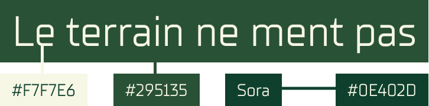
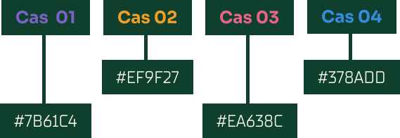
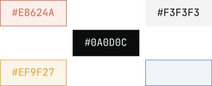
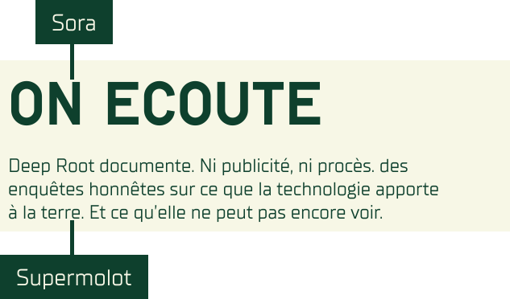
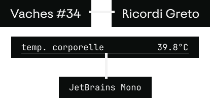

Case Study
Deep Root
Le projet prend comme base le Design Fiction. Ce dernier représente la pratique de la création de prototypes tangibles et évocateurs dans un possible avenir proche. Cela permet d’explorer et mettre en lumière les conséquences, néfastes ou non, de ces projets.
Afin d’être aider dans la démarche de réflexion, ce projet a commencé tôt dans l’année. Dès octobre 2025, la lecture d’un article de presse, venant du site L’ADN, et son analyse était demandée toutes les deux semaines. À ce moment, cela ne faisait pas sens mais je remarquais déjà une attirance pour les articles concernant la technologie spatiale et le développement de l’AgTech, branche ultra moderne de l’agriculture moderne.
Dès lors, début mars, lorsque j’ai commencé à me pencher sur un sujet pour mon projet de design fiction, une direction me semblait claire. Il fallait que je mèle mes deux sujets préférés d’articles. Cet article a marqué un premier pas vers mon sujet de projet. Je pensais alors me lancer dans un projet de comparaison entre l’agriculture industrielle et celle traditionnelle, de village.
Cependant, un évènement marquera un tournant majeur et m’emmènera vers mon sujet final
Le Projet
Historique de vie
J’ai toujours été passionné par l’agriculture et j’ai eu l’occasion d’en faire mon job étudiant il y a quelques années. J’ai même ramené cette passion chez moi et je me suis mis à élever des poussins, destinés à la consommation de viande.
La semaine avant de valider mon sujet définitivement, j’avais accueilli une quinzaine de poussins. Malheureusement, un est décédé dans les jours suivants. Je n’ai pas su comprendre pourquoi et cela m’ennuye énormément à chaque décès.
Si seulement j’avais pu avoir une caméra ou alors, une quelconque manière d’anticiper. Et si...
Et si mon élevage était connecté à mon téléphone, par capteurs et transmis sur application?
Au final
Je me suis lancé dans la création d’un univers où les exploitations agricoles sont consultables sur une application. Ce sujet très précis reste assez large paradoxalement. Je me concentre donc sur un projet autour de l’élevage.
Et si, l’éleveur avait une application qui le permet de suivre la santé de ses bêtes?
Par caméra, implant, capteur en général, les bêtes sont analysées selon leur déplacement, respiration, contraction, hydratation, alimentation, etc. Et le tout se retrouve dans une application; la ferme devient connectée.
Cette application se prénomme FarmSync.
Soucis?
Mon principal soucis de conception n’était pas de trouver du contenu, qui m’est venu assez facilement, mais bien de comment l’articuler autour de l’application. Je ne voulais pas créer un site de e-commerce ou encore, une simple newsletter.
La présentation de l’application se structure autour de 4 cas de figures dans lesquels les bienfaits sont présentés au même titre que les problématiques
La meilleure façon d’exposer ces derniers est par le biais d’un syndicat ou autre moderne, à l’esprit critique et proche du terrain. C’est là qu’entre en jeu Deep Root, un collectif d’agriculteurs fan de AgTech.
Deep Root est la pierre angulaire de ce projet
Du Design
La partie design de ce projet est la partie qui m'a pris le plus de temps, en comparaison avec l'écriture du contenu et l'intégration. Ce n'est pas la partie que je trouve la plus intuitive à aborder pour moi, je préfère le code. Cela dit, je remarque qu'avec un bon prototypage, l'intégration devient beaucoup plus fluide.
Des couleurs
Pour Deep Root, je suis parti sur une palette de couleurs naturelles afin de refléter au mieux l’agriculture et l'environnement rural. Un blanc, un peu jaune, rappelant la paille auquel j'ajoute deux nuances de vert.

J'ai souhaité utilisé des couleurs d'accentuation selon les cas afin d'éviter une certaine monotonie.

Pour FarmSync, qu'on ne voit qu'au travers de mockups, je suis parti sur une palette simple; une nuance de blanc et une de noir. À cela, j'ai ajouté des couleurs d'accentuation selon la gravité du message transmis.

Des polices
Pour Deep Root, j'ai tout d'abord utilisé Sora comme police pour les titres car je cherchais une police moderne et lisible, tout en gardant un impact marquant.
En contrepartie, pour le texte, j'ai opté pour une police plus carrée tout en restant facile à lire, afin de faire ressortir les titres.

Pour FramSync, j'ai utilisé JetBrains Mono pour les textes pour sa typographie assez carrée, rappelant une ligne de code. Le but était de rester proche d'un univers très tech, très IA, mais la lisibilité reste importante afin d'aller droit à l'information.
Enfin pour le peu de titres, j'ai utilisé une police plus simple, lisible et sur la rondeur; Ricordi Greto de TypeType.

Du Code
Pour la partie d'intégration, je n'ai pas eu vraiment de difficulté. J'avançais de manière progressive et méthodique. L'utilisation de SCSS m'a permis d'organiser mes styles d'une meilleure façon, il m'a fallu un temps d'adaptation car c'est mon premier projet avec ce preprocessor. Je pense qu'il y a un certain nombre de choses que je pourrais améliorer dans mes futurs projets.
Concernant le JavaScript, il gère trois fonctionnalités clés : l'ouverture et la fermeture du burger menu, l'effet de scroll back du header et un compteur animé qui se déclenche lorsque l'élément devient visible à l'écran.
Voir le rendu